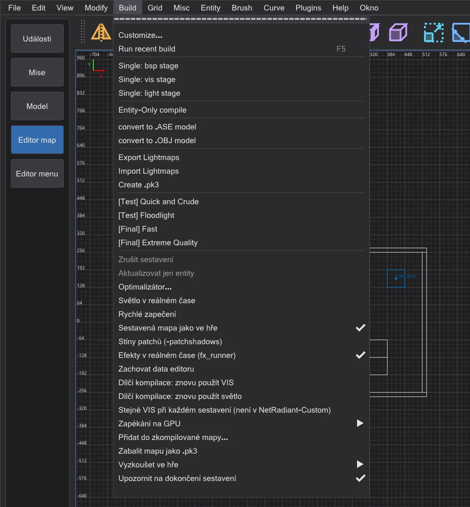
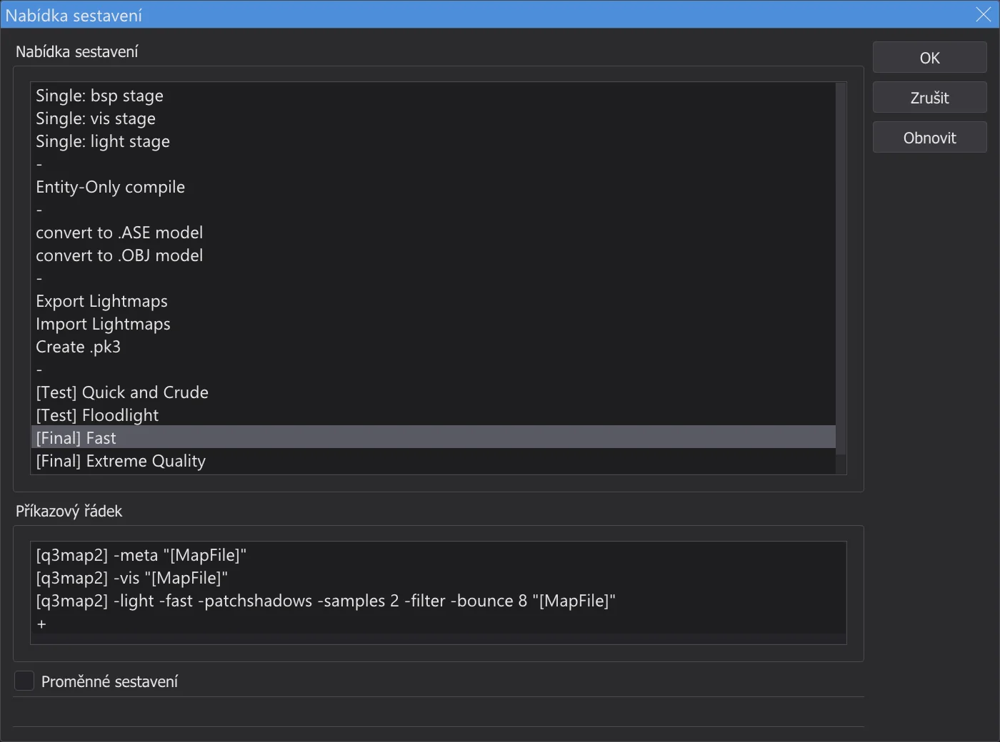
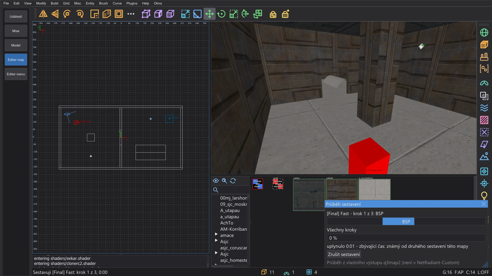
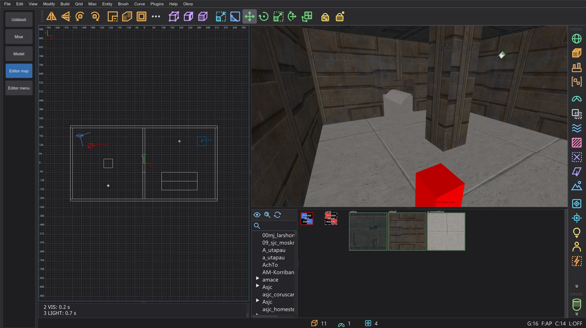
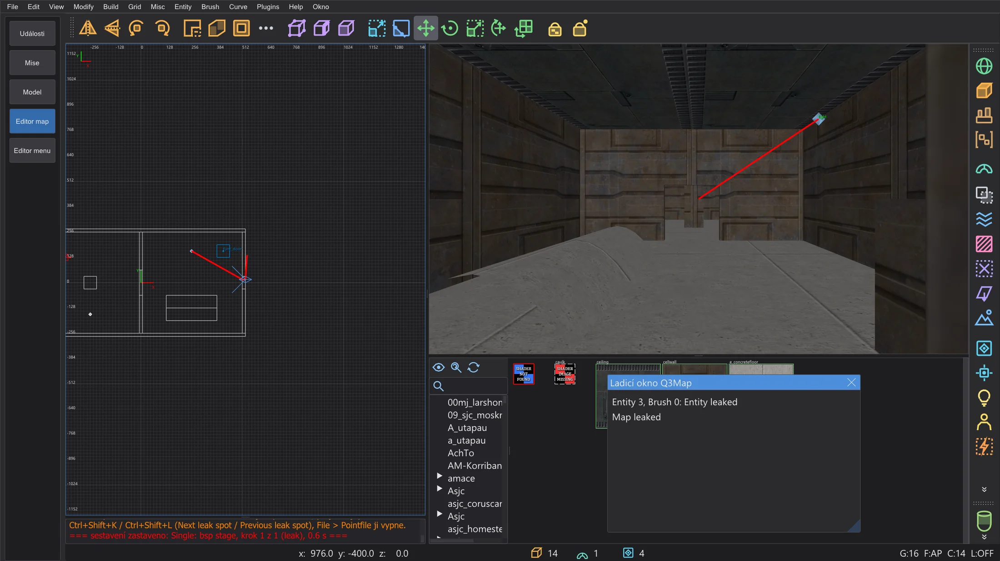
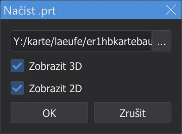
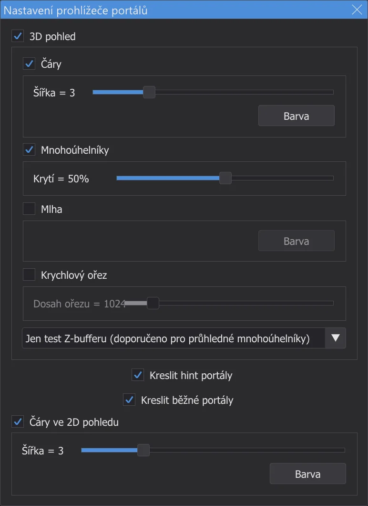
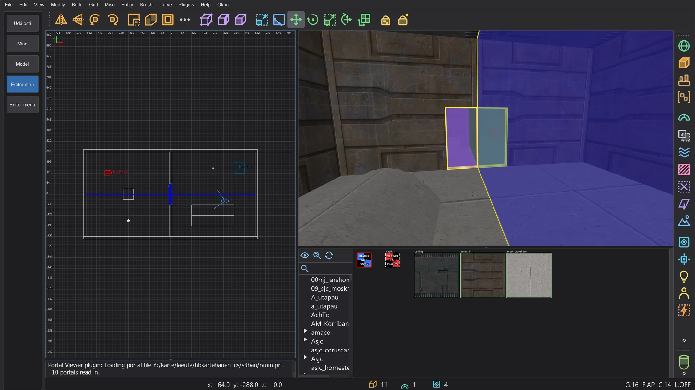
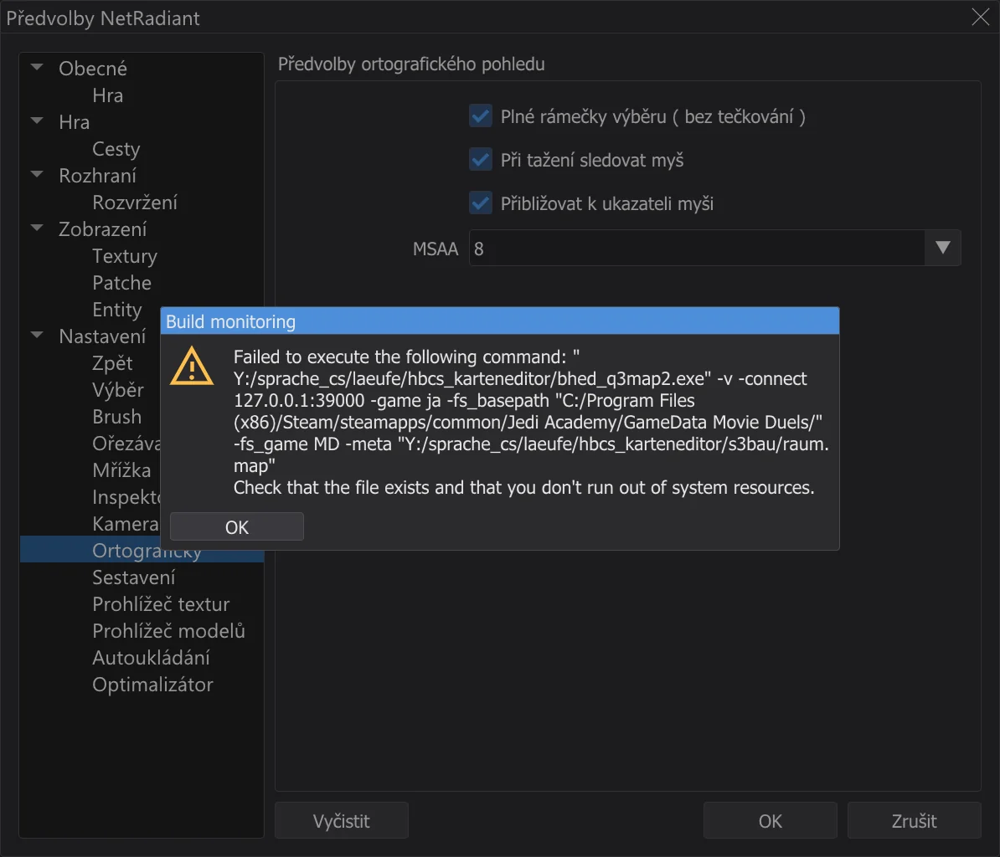

Editor map: kompilace mapy
Převeďte mapu na hratelný .bsp pomocí q3map2 z nabídky Build: běží na pozadí s výstupem v konzoli, ukazuje úniky jako červenou čáru a na požádání portály a nikdy nezapisuje do složky hry.
Nabídka ⟦Build⟧#

Každá položka spustí na mapě jeden nebo více příkazů q3map2. Kompilátor map bhed_q3map2.exe je q3map2 z NetRadiant-Custom, sestavený s programem a dodávaný vedle jkstudio.exe; dává stejné výsledky. Run recent build (F5) zopakuje poslední položku. Customize otevře dialog Nabídka sestavení: položky a jejich příkazy lze přidávat (dvojklik na +), přejmenovávat, přeřazovat tažením (s Ctrl kopírovat) a mazat; Proměnné sestavení ukazuje proměnné jako [MapFile] a [q3map2]. Nabídka se uloží při zavření editoru map.

Tři fáze#
| Fáze | Co dělá |
|---|---|
BSP (-meta) | Převede brushe a patche na strom BSP a povrchy, zapíše .bsp, .prt a .srf. Není-li mapa utěsněná, zastaví se s únikem. |
VIS (-vis) | Spočítá, které oblasti na sebe vidí, aby hra kreslila méně. Potřebuje soubor portálů z fáze BSP. |
LIGHT (-light) | Zapeče světlo světelných entit a oblohy do lightmap a mřížky světla. |
[Test] Quick and Crude spustí rychle všechny tři fáze pro první pohled, [Final] Fast a [Final] Extreme Quality dají světlu skutečnou kvalitu. Jednotlivé fáze se hodí při práci na jedné části, například jen Single: light stage po posunutí světel.
Během sestavování#

- 1
Mapa se nejdřív uloží (nepojmenovaná mapa se zeptá na název). S oblastí se sestaví jen oblast (
<map>.reg). - 2
q3map2 se spouští bez okna a hlásí se zpět přes místní připojení, jako v NetRadiant-Custom. Varování se objevují žlutě, chyby červeně; chyba zastaví zbývající kroky.
- 3
Můžete dál pracovat - rozhlížet se, vybírat, upravovat. Build > Zrušit sestavení ukončí q3map2.
- 4
Na konci řádek uvede položku, kroky a čas - a návratový kód q3map2, pokud nebyl 0.

Konzole po [Final] Fast.

junk.txt ve složce nastavení.Hledání úniků#

Vnitřek mapy musí být utěsněný brushi. Najde-li q3map2 cestu od entity do prázdna, fáze BSP se zastaví s MAP LEAKED (červeně) a čára úniku se objeví červeně ve 2D pohledech a v kameře. Ladicí okno Q3Map vypíše entitu, od které únik vede - kliknutí ji vybere.
| Ctrl+Shift+K | Next leak spot: kamera a 2D pohledy na další bod čáry, s pohledem podél ní |
| Ctrl+Shift+L | Previous leak spot: zpět na předchozí bod |
Sledujte čáru, dokud neopustí mapu - tam je díra. Uzavřete ji a sestavte znovu. File > Pointfile čáru vypíná a zapíná (čte <map>.lin); uložení mapy ji odstraní.
Zobrazení portálů#




Portály jsou otvory mezi oblastmi, se kterými pracuje fáze VIS. Plugins > prtview > Load .prt file načte soubor portálů poslední fáze BSP (Zobrazit 3D, Zobrazit 2D): v kameře je každý portál barevný poloprůhledný mnohoúhelník s obrysem, ve 2D pohledech modrá čára. Mnoho malých portálů tam, kde hráč vidí daleko, mapu zpomaluje - pomáhají hint brushe a detailní brushe. Configure Portal Viewer nastavuje barvy, šířky čar, krytí, mlhu a ořezovou krychli; Toggle portals (3D)/(2D) a Unload .prt file přepínají zobrazení.

Kam jdou soubory#

.bsp a ostatní soubory se zapisují vedle .map, jako v NetRadiant-Custom. Výstupní složka na stránce Sestavení je místo toho dá do složky podle vaší volby (mapa se tam zkopíruje a sestaví). Do složky hry se nikdy nic nezapisuje: leží-li tam mapa nebo výstupní složka, sestavení běží v pracovní složce ve složce nastavení a konzole to oznámí.
Vyzkoušení ve hře#
- 1
Zkopírujte sestavený
<name>.bspdo složkymapshry, napříkladGameData\base\maps(s modem: jeho složka, např.MD\maps). Editor map to sám nedělá - nikdy nezapisuje do složky hry. - 2
Spusťte hru sami, otevřete konzoli pomocí Shift+~ a zadejte
devmap <name>- název bez.bsp.devmappovoluje i cheaty jakonoclipagodpro rozhlížení. - 3
Po dalším sestavení zkopírujte
.bspznovu a znovu zadejtedevmap <name>- hra načte novou verzi.
+devmap <name>, jako v NetRadiant-Custom - .bsp pak už musí být ve složce, kterou hra prohledává.AutoCaulk#
Brush > AutoCaulk Selected (F4) dá každé stěně vybraných brushů, kterou nelze vidět zevnitř, texturu caulk - méně povrchů, rychlejší mapa. Postavte se s kamerou dovnitř výběru; q3map2 rozhodne, které stěny jsou skryté. Jeden krok zpět to vrátí.